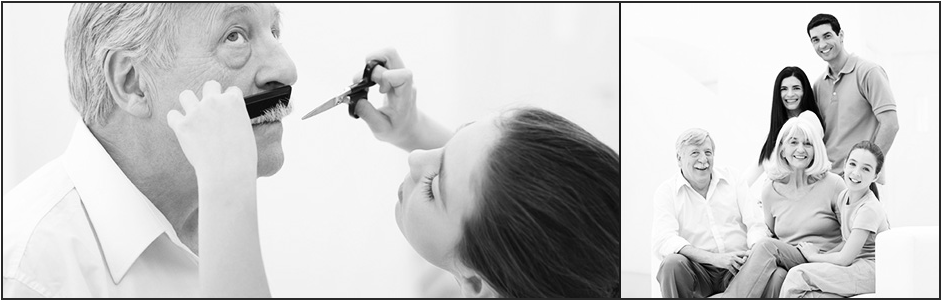

| HOME ABOUT GALLERY BLOG CONTACT |
|  |
WHY I GREW A MUSTACHE
This website template has been designed by Free Website Templates for you, for free. |
|
All Wix templates are fully customizable and free to use.
Just pick one you like, click Edit, and enter the online editor. Change, add, and remove items as you like. Wix also offers a ton of free design elements right inside the editor, like images, icons, animation files, and interactive widgets. Publish your Free Website in minutes! This website template has been designed by Free Website Templates for you, for free. You can replace all this text with your own text. |
|
Want an easier solution for a Free Website? Head straight to Wix and immediately start |

|